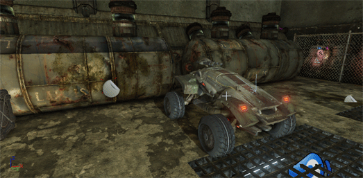

UDN
Search public documentation:
UnrealEditorPreferencesKR
English Translation
日本語訳
中国翻译
Interested in the Unreal Engine?
Visit the Unreal Technology site.
Looking for jobs and company info?
Check out the Epic games site.
Questions about support via UDN?
Contact the UDN Staff
日本語訳
中国翻译
Interested in the Unreal Engine?
Visit the Unreal Technology site.
Looking for jobs and company info?
Check out the Epic games site.
Questions about support via UDN?
Contact the UDN Staff
언리얼 에디터 개인설정
개요
뷰포트 렌더링 & 내비게이션
- 비행 카메라 콘트롤
- 이 세팅은 비행 카메라를 사용할지, 어떻게 접근할지를 결정합니다. 비행 카메라는 이동과 패닝에 표준 FPS 콘트롤 조작 방식과 비슷하게 W, A, S, D 키를 사용합니다. W 와 S 는 카메라를 들였다 뺐다 이동시키고, A 와 D 는 카메라 패닝 또는 게걸음 입니다. 활성화되면 표시 플랙 토글을 포함해서 이 콘트롤을 사용하는 핫키를 덮어씁니다.
옵션 설명 카메라 콘트롤에 WASD 사용 비행 카메라와 WASD 콘트롤을 항상 사용합니다. 오른쪽 마우스 버튼이 눌렸을 때만 WASD 사용 비행 카메라와 WASD 콘트롤을 우클릭 상태에서만 사용합니다. 카메라 콘트롤에 WASD 미사용 비행 카메라와 WASD 콘트롤을 절대 사용하지 않습니다. - 잡아 끌면 직각 카메라 스크롤
- 켜면 직각 뷰포트에서 좌/우클릭 후 잡아 끌면 카메라가 스크롤됩니다. 쉽게 말해서 클릭하고 드래그하면 씬이 마우스를 따라 움직이는 것입니다. 이 기능을 끄면 씬은 마우스 반대 방향으로 움직입니다.
- 커서 위치로 Zoom
- 켜면 직각 뷰포트가 마우스 커서를 중심으로 확대됩니다. 끄면 뷰포트 가운데를 중심으로 확대됩니다.
- 직각 뷰포트 링크
- 켜면 모든 직각 뷰포트가 연결되어 같은 위치에 집중됩니다. 즉 한 직각 뷰포트에서 카메라를 움직이면 다른 직각 뷰포트도 따라오는 것입니다. 끄면 모든 뷰포트가 별개로 움직입니다.
- 위아래 뷰포트 크기 동시 조절
- 켜면 2x2 분할 설정시 좌우 뷰포트 사이의 분리선을 조절하면 위아래 뷰포트 둘 다에 영향을 끼칩니다. 끄면 위쪽 뷰포트 사이의 분리선은 위쪽 뷰포트에만, 아래쪽 뷰포트 사이의 분리선은 아래쪽 뷰포트에만 영향을 끼칩니다.
- 화면 비율 유지
- TODO
옵션 설명 Y-축 시야 유지 X-축 시야 유지 주축 시야 유지 - 눈에 띄는 와이어프레임 켜기 (퍼스펙티브 뷰)
- 켜면 퍼스펙티브 뷰의 와이어프레임 테두리 주변으로 헤일로 포스트 프로세스가 사용됩니다. 퍼스펙티브 뷰포트를 와이어프레임 모드로 볼 때 원근감 구분이 훨씬 쉬워집니다.

- 퍼스펙티브 뷰포트의 기본 모드는 실시간
- 켜면 퍼스펙티브 뷰포트에는 실시간 업데이트 모드가 항상 켜집니다. 에디터에서 복잡한 레벨 작업을 할 때는 퍼포먼스 영향이 있을 수 있습니다.
- 뷰포트에서 플레이의 카메라 위치 사용
- 켜면 뷰포트에서 플레이를 빠져나올 때 그 위치와 로테이션으로 뷰포트 카메라를 설정합니다.
- BSP 시각화 자동 업데이트
- 커면 브러시 액터가 수정될 때 뷰포트의 BSP 지오메트리가 자동 업데이트됩니다. 끄면 지오메트리를 리빌드해야 브러시 액터의 변경사항을 확인할 수 있습니다. Ctrl + Alt + U 키로 이 옵션 토글이 가능합니다.
 경고: 레벨을 실제 플레이하려면 지오메트리를 수동으로 리빌드해 줘야 합니다.
경고: 레벨을 실제 플레이하려면 지오메트리를 수동으로 리빌드해 줘야 합니다.
선택 & 트랜스폼
- 커서 아래의 오브젝트 강조
- 켜면 뷰포트의 마우스 커서 아래 오브젝트가 강조되어 나타납니다.

- 선택된 오브젝트를 브래킷으로 강조
- 켜면 뷰모드와 상관없이 선택된 오브젝트는 뷰포트에 브래킷으로 강조되어 나타납니다.

- 절대 트랜슬레이션 사용
- 켜면 트랜스폼 중 트랜슬레이션(옮기기)은 절대치로 간주됩니다. 끄면 트랜슬레이션은 이전 위치에 상대적인 것으로 간주되며, 상태 바에 변화가 표시됩니다.
- 트랜슬레이션/로테이션 결합 위젯 켜기
- 켜면 스페이스 키로 트랜스폼 위젯을 순환시킬 때 균등 스케일 툴 다음에 트랜슬레이션과 Z-로테이션 툴이 결합된 툴이 포함됩니다.

- BSP를 클릭하면 브러시 선택
- 켜면 BSP 표면을 클릭할 때 브러시가, Ctrl + Shift + 클릭 할 때 표면이 선택됩니다. 끄면 반대로 Ctrl + Shift + 클릭 이 브러시, 그냥 클릭이 표면을 선택합니다.
콘텐츠
- 교체시 액터 스케일 유지
- 켜면 액터를 교체할 때 기존 액터의 스케일이 새 액터에 유지됩니다. 끄면 새 액터의 스케일은 기존 액터의 스케일과 무관하게 1.0 으로 리셋됩니다.
- 패키지 수정시 체크아웃 묻기
- 켜면 소스 콘트롤 하의 패키지가 수정될 때마다 체크아웃시킬지를 묻는 창이 뜹니다.
- 텍스처 자동-리임포트
- 켜면 텍스처에 대한 소스 파일을 모니터링하여, 수정되면 텍스처를 자동으로 리임포트 시킵니다.
- PIE 에 GFx 무비 변경사항 적용
- 켜면 스케일폼 GFx 유저 인터페이스 파일을 모니터링하여, 에디터가 열려있을 때 변경한 내용을 PIE 세션에서 게임을 실행할 때 적용합니다.
- 항상 모바일용 콘텐츠 최적화
- 켜면 에디터의 레벨과 애셋을 추가로 최적화시켜 모바일 디바이스용으로 준비합니다. 특히나 모바일 디바이스에 설치할 때 사용되는 보통 빠른 (저품질) 압축 대신 풀 PVRTC 압축이 사용됩니다.
- 디스트리뷰션에 커브 사용
- 켜면 디스트리뷰션(분포)를 에디터에 그릴 때 간추린 룩업 테이블 대신 커브를 사용합니다.
- 시동시 심플 레벨 로드
- 켜면 에디서 실행시
*Editor.ini파일의[UnrealEd.SimpleMap]섹션에 있는SimpleMapName프로퍼티에 지정된 맵이 로드됩니다. - 에디터 언어
- 에디터의 UI 부분에 사용할 언어를 설정합니다.